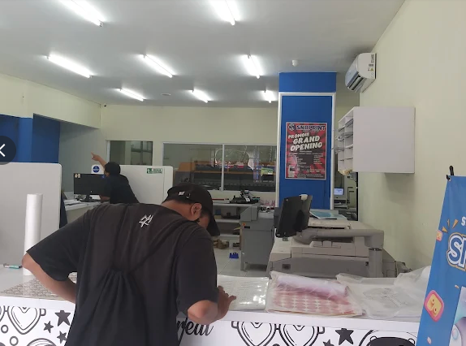

Snaprint Digital Printing didirikan dengan satu komitmen utama: memberikan kemudahan pencetakan media bisnis yang berkualitas tinggi, cepat, dan transparan.
Dengan tagline khas kami "Dari Desain Sampai Cetak, Semua Bisa Online!", kami memotong kerumitan proses percetakan tradisional. Mulai dari UMKM lokal, perkantoran corporate, hingga event organizer ternama di Bekasi telah memercayakan kebutuhan promosi fisik mereka kepada Snaprint.
Menjadi pusat digital printing terbaik dan paling diandalkan di Jabodetabek dengan mengedepankan teknologi mutakhir & pelayanan serba online.
Menyediakan hasil cetak warna tajam presisi tinggi, memastikan ketepatan waktu produksi kilat, dan memberikan sistem pemesanan online tanpa batas jarak.

Kombinasi mesin produksi performa tinggi untuk menjamin akurasi warna dan ketahanan bahan terbaik.
Mesin pencetak outdoor & indoor lebar hingga 3.2 meter dengan tinta Eco-Solvent tahan cuaca panas dan air tanpa mudah pudar.
Aplikasi: Spanduk Flexi, Banner, Stiker MeteranMesin cetak digital offset berkecepatan tinggi dengan resolusi 2400 DPI untuk mencetak kartu nama, brosur, sertifikat, & stiker A3+.
Aplikasi: A3+ Print, Kartu Nama, Brosur, Stiker SheetMesin pemotong laser presisi milimeter dan cetak Flatbed UV langsung di media keras seperti Akrilik, Kayu, dan Plakat.
Aplikasi: Plakat Akrilik, Cutting Stiker, Souvenir